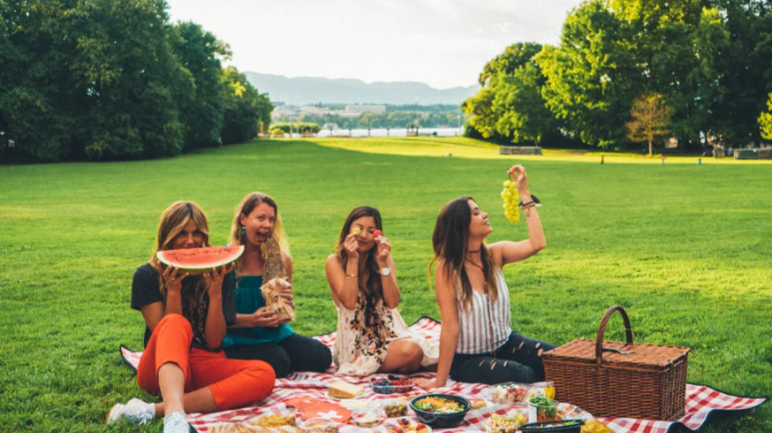

I’m Nadine Sykora and I'm one of the top travel vloggers on YouTube who travels the world and shares my experiences and travel expertise through my videos and on Instagram.
AUGUST 13, 2017
Asturias is a region in northern Spain, known for its beautiful natural scenery, its rich history, and its delicious food. Travelers to Asturias come from all over the world, but there are a few groups of people who are particularly drawn to the region.
Come along as we road trip through the south of France with Renault Eurodrive! We explore the beautiful seaside cities of Cannes and Nice, and small mountain villages such as Grasse, Biot, Mougins, and Saint-Paul de Vence. We also check out the incredible Rothschild Villa to take in the gardens and the amazing views of the French Riviera.
Hikers and climbers: Asturias is home to some of the most beautiful hiking and climbing trails in Spain.

Foodies: Asturias is known for its delicious food, which is often made with local ingredients.
